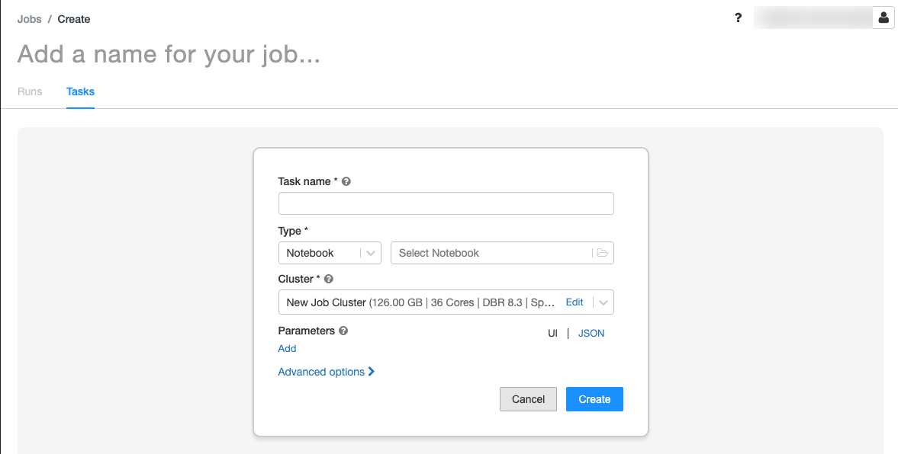

Orchestrate Databricks jobs with Apache Airflow
This article describes the Apache Airflow support for orchestrating data pipelines with Databricks, has instructions for installing and configuring Airflow locally, and provides an example of deploying and running a Databricks workflow with Airflow.
Job orchestration in a data pipeline
Developing and deploying a data processing pipeline often requires managing complex dependencies between tasks. For example, a pipeline might read data from a source, clean the data, transform the cleaned data, and write the transformed data to a target. You also need support for testing, scheduling, and troubleshooting errors when you operationalize a pipeline.
Workflow systems address these challenges by allowing you to define dependencies between tasks, schedule when pipelines run, and monitor workflows. Apache Airflow is an open source solution for managing and scheduling data pipelines. Airflow represents data pipelines as directed acyclic graphs (DAGs) of operations. You define a workflow in a Python file, and Airflow manages the scheduling and execution. The Airflow Databricks connection lets you take advantage of the optimized Spark engine offered by Databricks with the scheduling features of Airflow.
Requirements
The integration between Airflow and Databricks requires Airflow version 2.5.0 and later. The examples in this article are tested with Airflow version 2.6.1.
Airflow requires Python 3.8, 3.9, 3.10, or 3.11. The examples in this article are tested with Python 3.8.
The instructions in this article to install and run Airflow require pipenv to create a Python virtual environment.
Airflow operators for Databricks
An Airflow DAG is composed of tasks, where each task runs an Airflow Operator. Airflow operators supporting the integration to Databricks are implemented in the Databricks provider.
The Databricks provider includes operators to run a number of tasks against a Databricks workspace, including importing data into a table, running SQL queries, and working with Databricks Repos.
The Databricks provider implements two operators for triggering jobs:
The DatabricksRunNowOperator requires an existing Databricks job and uses the POST /api/2.1/jobs/run-now API request to trigger a run. Databricks recommends using the
DatabricksRunNowOperatorbecause it reduces duplication of job definitions, and job runs triggered with this operator can be found in the Jobs UI.The DatabricksSubmitRunOperator does not require a job to exist in Databricks and uses the POST /api/2.1/jobs/runs/submit API request to submit the job specification and trigger a run.
To create a new Databricks job or reset an existing job, the Databricks provider implements the DatabricksCreateJobsOperator. The DatabricksCreateJobsOperator uses the POST /api/2.1/jobs/create and POST /api/2.1/jobs/reset API requests. You can use the DatabricksCreateJobsOperator with the DatabricksRunNowOperator to create and run a job.
Note
Using the Databricks operators to trigger a job requires providing credentials in the Databricks connection configuration. See Create a Databricks personal access token for Airflow.
The Databricks Airflow operators write the job run page URL to the Airflow logs every polling_period_seconds (the default is 30 seconds). For more information, see the apache-airflow-providers-databricks package page on the Airflow website.
Install the Airflow Databricks integration locally
To install Airflow and the Databricks provider locally for testing and development, use the following steps. For other Airflow installation options, including creating a production installation, see installation in the Airflow documentation.
Open a terminal and run the following commands:
mkdir airflow
cd airflow
pipenv --python 3.8
pipenv shell
export AIRFLOW_HOME=$(pwd)
pipenv install apache-airflow
pipenv install apache-airflow-providers-databricks
mkdir dags
airflow db init
airflow users create --username admin --firstname <firstname> --lastname <lastname> --role Admin --email <email>
Replace <firstname>, <lastname>, and <email> with your username and email. You will be prompted to enter a password for the admin user. Make sure to save this password because it is required to log in to the Airflow UI.
This script performs the following steps:
Creates a directory named
airflowand changes into that directory.Uses
pipenvto create and spawn a Python virtual environment. Databricks recommends using a Python virtual environment to isolate package versions and code dependencies to that environment. This isolation helps reduce unexpected package version mismatches and code dependency collisions.Initializes an environment variable named
AIRFLOW_HOMEset to the path of theairflowdirectory.Installs Airflow and the Airflow Databricks provider packages.
Creates an
airflow/dagsdirectory. Airflow uses thedagsdirectory to store DAG definitions.Initializes a SQLite database that Airflow uses to track metadata. In a production Airflow deployment, you would configure Airflow with a standard database. The SQLite database and default configuration for your Airflow deployment are initialized in the
airflowdirectory.Creates an admin user for Airflow.
Tip
To confirm the installation of the Databricks provider, run the following command in the Airflow installation directory:
airflow providers list
Start the Airflow web server and scheduler
The Airflow web server is required to view the Airflow UI. To start the web server, open a terminal in the Airflow installation directory and run the following commands:
Note
If the Airflow web server fails to start because of a port conflict, you can change the default port in the Airflow configuration.
pipenv shell
export AIRFLOW_HOME=$(pwd)
airflow webserver
The scheduler is the Airflow component that schedules DAGs. To start the scheduler, open a new terminal in the Airflow installation directory and run the following commands:
pipenv shell
export AIRFLOW_HOME=$(pwd)
airflow scheduler
Test the Airflow installation
To verify the Airflow installation, you can run one of the example DAGs included with Airflow:
In a browser window, open http://localhost:8080/home. Log in to the Airflow UI with the username and password you created when installing Airflow. The Airflow DAGs page appears.
Click the Pause/Unpause DAG toggle to unpause one of the example DAGs, for example, the
example_python_operator.Trigger the example DAG by clicking the Trigger DAG button.
Click the DAG name to view details, including the run status of the DAG.
Create a Databricks personal access token for Airflow
Airflow connects to Databricks using a Databricks personal access token (PAT). To create a PAT:
In your Databricks workspace, click your Databricks username in the top bar, and then select User Settings from the drop down.
Click Developer.
Next to Access tokens, click Manage.
Click Generate new token.
(Optional) Enter a comment that helps you to identify this token in the future, and change the token’s default lifetime of 90 days. To create a token with no lifetime (not recommended), leave the Lifetime (days) box empty (blank).
Click Generate.
Copy the displayed token to a secure location, and then click Done.
Note
Be sure to save the copied token in a secure location. Do not share your copied token with others. If you lose the copied token, you cannot regenerate that exact same token. Instead, you must repeat this procedure to create a new token. If you lose the copied token, or you believe that the token has been compromised, Databricks strongly recommends that you immediately delete that token from your workspace by clicking the trash can (Revoke) icon next to the token on the Access tokens page.
If you are not able to create or use tokens in your workspace, this might be because your workspace administrator has disabled tokens or has not given you permission to create or use tokens. See your workspace administrator or the following:
Note
As a security best practice when you authenticate with automated tools, systems, scripts, and apps, Databricks recommends that you use OAuth tokens.
If you use personal access token authentication, Databricks recommends using personal access tokens belonging to service principals instead of workspace users. To create tokens for service principals, see Manage tokens for a service principal.
You can also authenticate to Databricks using Databricks OAuth for service principals. See Databricks Connection in the Airflow documentation.
Configure a Databricks connection
Your Airflow installation contains a default connection for Databricks. To update the connection to connect to your workspace using the personal access token you created above:
In a browser window, open http://localhost:8080/connection/list/. If prompted to sign in, enter your admin username and password.
Under Conn ID, locate databricks_default and click the Edit record button.
Replace the value in the Host field with the workspace instance name of your Databricks deployment, for example,
https://adb-123456789.cloud.databricks.com.In the Password field, enter your Databricks personal access token.
Click Save.
Example: Create an Airflow DAG to run a Databricks job
The following example demonstrates how to create a simple Airflow deployment that runs on your local machine and deploys an example DAG to trigger runs in Databricks. In this example, you will:
Create a new notebook and add code to print a greeting based on a configured parameter.
Create a Databricks job with a single task that runs the notebook.
Configure an Airflow connection to your Databricks workspace.
Create an Airflow DAG to trigger the notebook job. You define the DAG in a Python script using
DatabricksRunNowOperator.Use the Airflow UI to trigger the DAG and view the run status.
Create a notebook
This example uses a notebook containing two cells:
The first cell contains a Databricks Utilities text widget defining a variable named
greetingset to the default valueworld.The second cell prints the value of the
greetingvariable prefixed byhello.
To create the notebook:
Go to your Databricks workspace, click
 New in the sidebar, and select Notebook.
New in the sidebar, and select Notebook.Give your notebook a name, such as Hello Airflow, and make sure the default language is set to Python.
Copy the following Python code and paste it into the first cell of the notebook.
dbutils.widgets.text("greeting", "world", "Greeting") greeting = dbutils.widgets.get("greeting")
Add a new cell below the first cell and copy and paste the following Python code into the new cell:
print("hello {}".format(greeting))
Create a job
Click
 Workflows in the sidebar.
Workflows in the sidebar.Click
 .
.The Tasks tab appears with the create task dialog.
Replace Add a name for your job… with your job name.
In the Task name field, enter a name for the task, for example, greeting-task.
In the Type drop-down menu, select Notebook.
In the Source drop-down menu, select Workspace.
Click the Path text box and use the file browser to find the notebook you created, click the notebook name, and click Confirm.
Click Add under Parameters. In the Key field, enter
greeting. In the Value field, enterAirflow user.Click Create task.
In the Job details panel, copy the Job ID value. This value is required to trigger the job from Airflow.
Run the job
To test your new job in the Databricks Workflows UI, click  in the upper right corner. When the run completes, you can verify the output by viewing the job run details.
in the upper right corner. When the run completes, you can verify the output by viewing the job run details.
Create a new Airflow DAG
You define an Airflow DAG in a Python file. To create a DAG to trigger the example notebook job:
In a text editor or IDE, create a new file named
databricks_dag.pywith the following contents:from airflow import DAG from airflow.providers.databricks.operators.databricks import DatabricksRunNowOperator from airflow.utils.dates import days_ago default_args = { 'owner': 'airflow' } with DAG('databricks_dag', start_date = days_ago(2), schedule_interval = None, default_args = default_args ) as dag: opr_run_now = DatabricksRunNowOperator( task_id = 'run_now', databricks_conn_id = 'databricks_default', job_id = JOB_ID )
Replace
JOB_IDwith the value of the job ID saved earlier.Save the file in the
airflow/dagsdirectory. Airflow automatically reads and installs DAG files stored inairflow/dags/.
Install and verify the DAG in Airflow
To trigger and verify the DAG in the Airflow UI:
In a browser window, open http://localhost:8080/home. The Airflow DAGs screen appears.
Locate
databricks_dagand click the Pause/Unpause DAG toggle to unpause the DAG.Trigger the DAG by clicking the Trigger DAG button.
Click a run in the Runs column to view the status and details of the run.